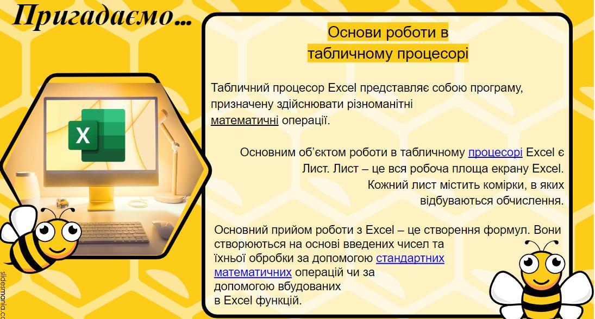
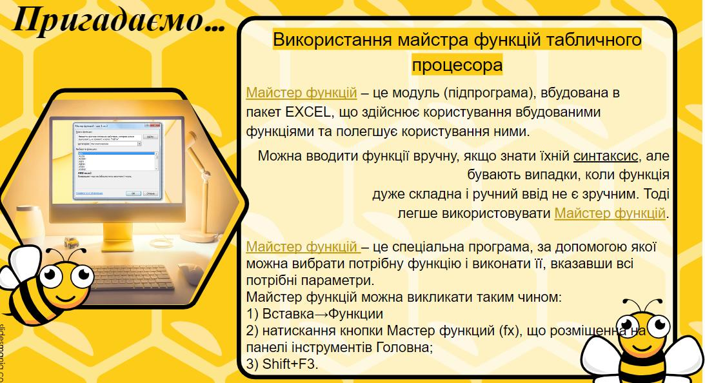

Статистика як наука виникла з потреб суспільного життя і пов’язується із суспільним поділом праці, появою держави, розвитком форм приватної власності. Вона охоплює та вивчає різні суспільні процеси та явища з кількісної та якісної сторін. Між статистичною наукою та людською діяльністю існує безперервний та тісний взаємозв’язок. Статистична наука використовує, систематизує та узагальнює інформацію про певні види діяльності, а різні установи чи суб’єкти використовують статистичні показники для прийняття різноманітних управлінських рішень. Історія розвитку статистики сягає сивої давнини і складається з низки етапів. Слово «статистика» латинського походження («status» – стан, становище), а в наукову термінологію вперше було введено німецьким вченим Г. Ахенвалем у середині XVII ст. У той час воно означало політичний стан держави: «stato» – держава, «statistika» – певна сума знань про державу. Осіб, що володіли знаннями про устрій і стан справ у різних державах, тобто державних діячів, політиків називали «statista» (статиста).
У XX столітті статистику розглядають вже як самостійну наукову дисципліну. Зростає зацікавленість в аналізуванні та зборі інформації у будь-якій галузі господарства та суспільного життя. Для цього розробляється спеціальна методологія дослідження і обробки матеріалів: масові статистичні спостереження та інші методи аналізу статистичних даних (метод угрупування, середніх величин, індексів, балансовий метод, метод графічних зображень). Процес збору та вимірювання інформації про задані зміни, встановлені систематичним способом, дають змогу відповісти на актуальні питання й оцінити результати роботи. Компонент збору даних певного дослідження характерний для всіх галузей знання, серед яких фізика, суспільні науки, гуманітарні науки і бізнес. У той час як методи можуть різнитися залежно від дисципліни, акцент на забезпечення точних і достовірних даних залишається.
На сьогодні статистика виконує важливу роль у механізмі управління економікою. Тому, сучасний стан соціально-економічного розвитку України потребує докорінних змін у підходах щодо розповсюдження статистичної інформації. Через ринкову систему економіки України існує нагальна потреба розроблення програми розповсюдження статистичних даних, головним завданням якої є створення нових умов – юридичних, економічних, технічних, технологічних, інформаційних, фінансових. Україна у своїх реформах також прагне застосовувати міжнародні підходи та методики щодо раціонального розподілу бюджету та впровадження нових технологій для більш якісної роботи статистичної системи. Тому реформування державної статистики у відповідності з міжнародними стандартами є надзвичайно важливим і актуальним завданням для України. Реалізація цього плану надасть змогу задовольняти потреби користувачів інформації, сприятиме вдосконаленню існуючих методів та підходів до збирання, розроблення, аналізу та поширення статистичної інформації високої якості.
 EXCEL – один з найдоступніших інструментів аналізу та візуалізації даних. Дозволяє швидко сортувати, фільтрувати, аналізувати дані.
Якщо потрібно провести комплексний статистичний або інженерний аналіз, можна зберегти зусилля та час, скориставшись пакетом аналізу. Ви надаєте дані та параметри для кожного аналізу, а засіб використовує усі потрібні статистичні або інженерні макрофункції для проведення підрахунку та відображає результати в таблиці результатів. Деякі засоби, окрім таблиць результатів, створюють ще й діаграми. Функції аналізу даних можна використовувати одночасно тільки на одному аркуші. Під час виконання аналізу даних на згрупованих аркушах результати відображаються на першому аркуші і пусті форматовані таблиці відобразяться на решті аркушів. Щоб виконати аналіз даних на решті аркушів перерахуйте засіб аналізу на кожному аркуші. Пакет аналізу містить описані нижче засоби. Щоб скористатися цими засобами, виберіть команду Аналіз даних у групі Аналіз на вкладці Дані. Якщо команда Аналіз даних недоступна, необхідно завантажити надбудову ''Пакет аналізу''.
Посилання на підручник «Інформатика (рівень стандарту)»
підручник для 10 (11) класу закладів загальної середньої освіти
Руденко, В. Д.; Речич, Н. В.; Потієнко, В. О. (2018)
Підручник